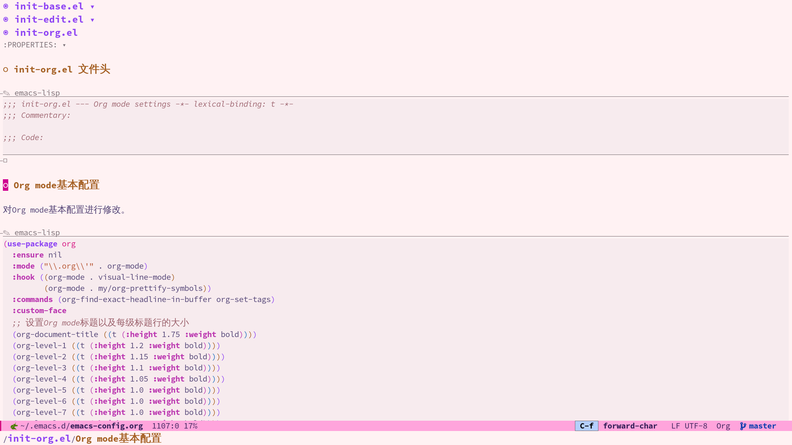
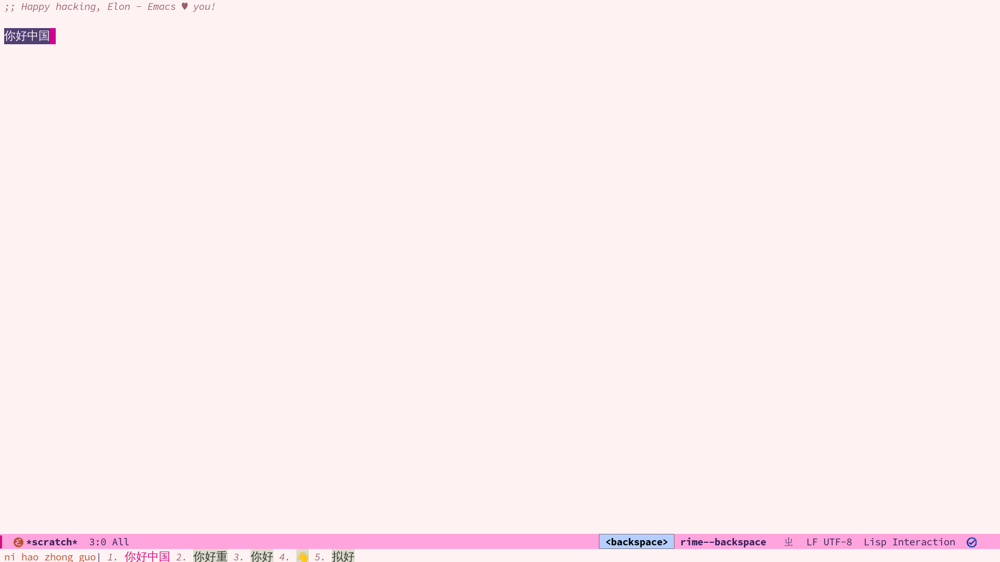
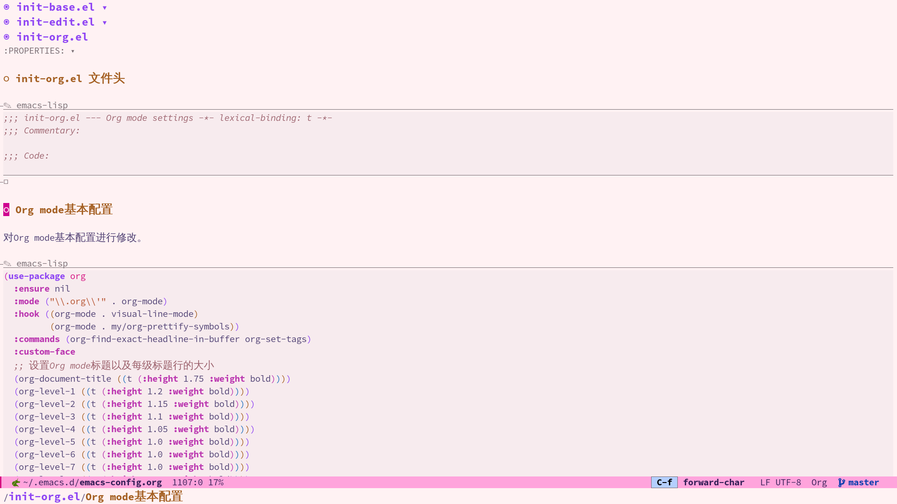
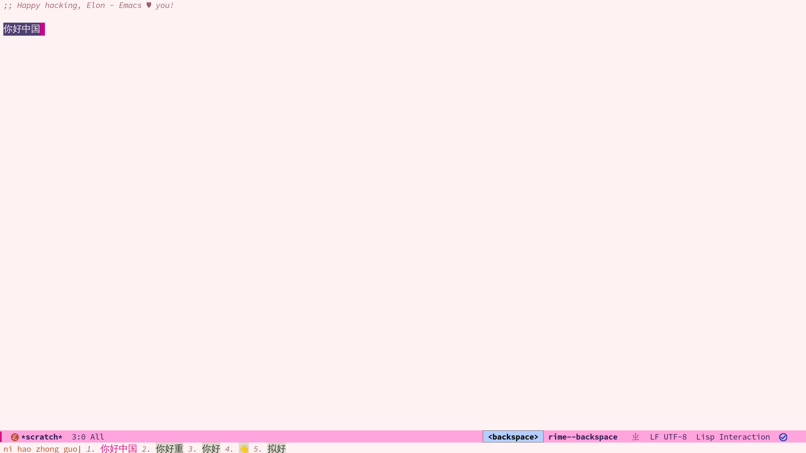
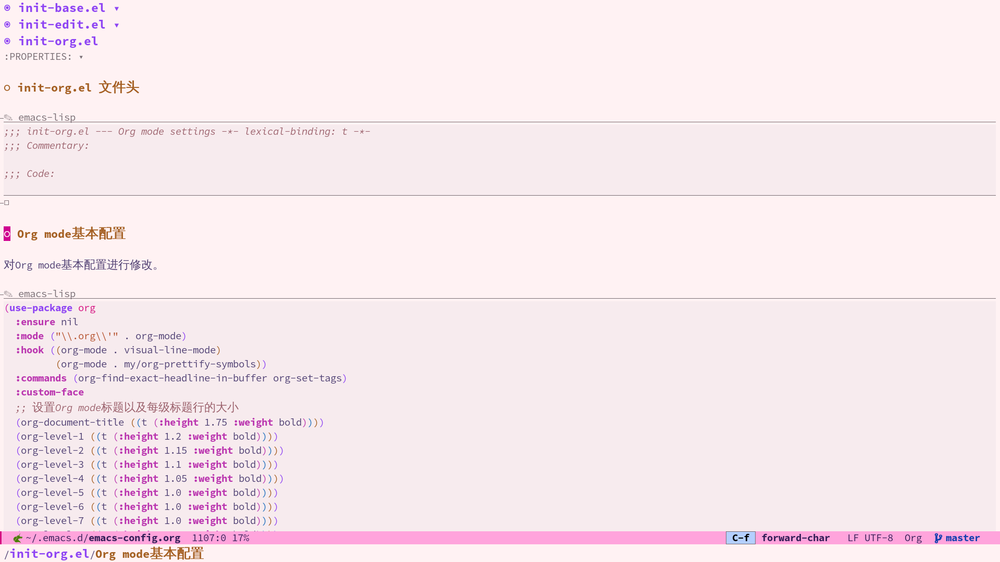
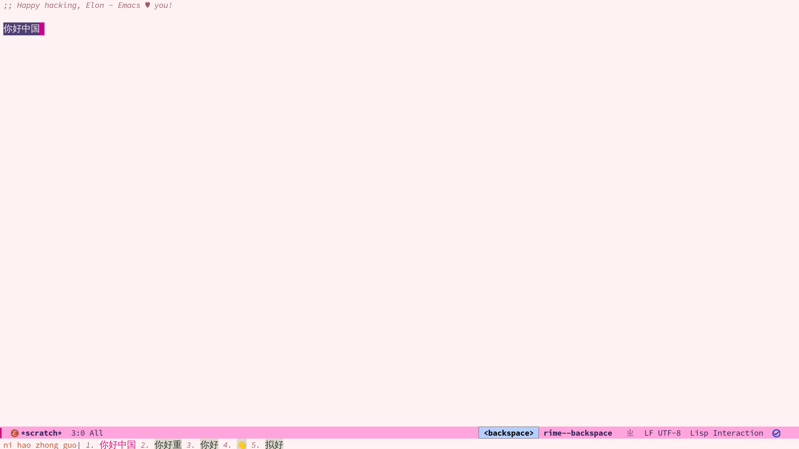

This is my Emacs configuration, modified based on the configuration in Remacs 的世界 and their tutorial “Emacs for Product Managers”. I am also an Emacs beginner and not familiar with many packages, but I will continuously update my configuration.
To use my configuration, follow these steps:
Clone my configuration repository to your local machine:
bash
git clone git@github.com:Elonisme/.emacs.d.git ~/.emacs.d
Launch Emacs, open the emacs-config.org file, and execute the following command:
M-x org-babel-tangle
Restart Emacs, and the generated files will automatically install the required packages and dependencies.
Restart Emacs to ensure the configuration takes effect.
My configuration is primarily focused on coding and note-taking and is not intended to be a comprehensive setup. I strive to include only the features I truly need, making it aesthetically pleasing, fast, and user-friendly.
Code completion: I use eglot as the code completion tool, primarily for Python development.
Note management and linking: I utilize org-roam for note management and linking, enabling the creation of a knowledge graph.
Reading and annotating PDF documents: I employ org-noter to read and annotate PDF documents within Emacs.
Custom startup screen: I integrate the dashboard package to provide a personalized startup screen that facilitates quick access to recent files and projects.
Chinese input method: I use rime for Chinese input, specifically the rime-ice configuration.
Please note that my configuration generates el files using org-mode. Therefore, you need to use the org-babel-tangle command to generate the configuration files. For more detailed instructions, refer to the tutorial in Remacs 的世界.
If you are new to Emacs, I recommend reading the “Emacs for Product Managers” tutorial. I believe you will find it beneficial.
It’s worth noting that my usage of use-package in the configuration is not yet proficient. If you encounter issues with package downloads, please manually download them as needed.
This configuration is licensed under the GNU General Public License v3.0 (GPLv3). You can find the complete license text in the LICENSE file.
If you have any questions or suggestions, feel free to contact me.
My email address is elonisme@163.com.
Happy coding and note-taking in Emacs!